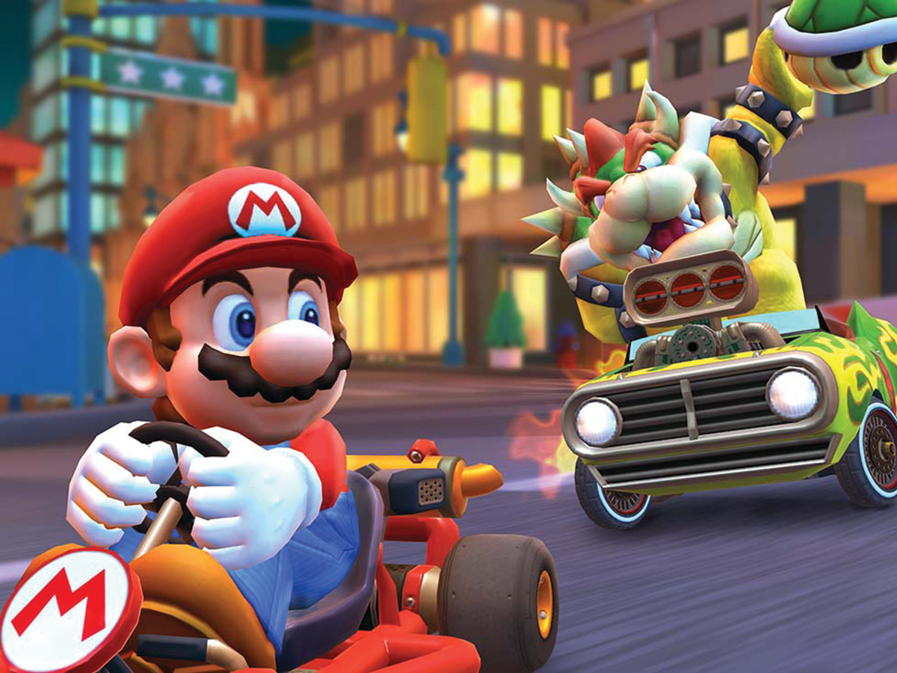
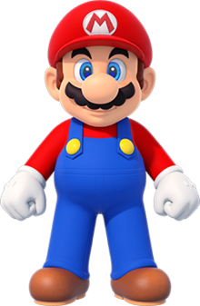

Will Mario Kart 9 be released in 2020? or will Nintendo hold out on fans for another whole year
Since mario Kart 8 has been released a long 6 years ago on the Wii U console (and then getting rebooted on the switch) it has many fans asking when will we get a mario kart 9? When will we get to see new karts and characters added to the MarioKart franchise? All valid questions for the Nintendo Fans! What are some things you want to see in the new Mariokart?Go to the Nintendo Official Webpage page for updates and game sales, perhaps submit some feedback of your own to tell them what you would like to see in the new MarioKart 9!
